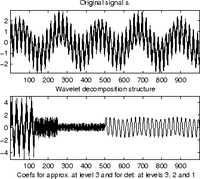

% The current extension mode is zero-padding (see dwtmode).
% Load original one-dimensional signal.
load sumsin;
s = sumsin;
% Perform decomposition at level 3 of s using db1.
[c,l] = wavedec(s,3,'db1');
% Using some plotting commands,
% the following figure is generated.
subplot(2, 1, 1);
plot(s);
title('Original Signal s');
subplot(2, 1, 2);
plot(c);
title('Wavelet Decomposition Structure');

图2 例程的输出结果
wden
简介
wden用于一维信号的小波消噪。
语法
[XD, CXD, LXD] = wden(X, TPTR, SORH, SCAL, N, 'wname')
% The current extension mode is zero-padding (see dwtmode).
% Set signal to noise ratio and set rand seed.
snr = 3; init = 2055615866;
% Generate original signal and a noisy version adding
% a standard Gaussian white noise.
[xref,x] = wnoise(3,11,snr,init);
% De-noise noisy signal using soft heuristic SURE thresholding
% and scaled noise option, on detail coefficients obtained
% from the decomposition of x, at level 5 by sym8 wavelet.
lev = 5;
xd = wden(x,'heursure','s','one',lev,'sym8');
% Plot signals.
subplot(611), plot(xref), axis([1 2048 -10 10]);
title('Original signal');
subplot(612), plot(x), axis([1 2048 -10 10]);
title(['Noisy signal - Signal to noise ratio = ',...
num2str(fix(snr))]);
subplot(613), plot(xd), axis([1 2048 -10 10]);
title('De-noised signal - heuristic SURE');
% De-noise noisy signal using soft SURE thresholding
xd = wden(x,'heursure','s','one',lev,'sym8');
% Plot signal.
subplot(614), plot(xd), axis([1 2048 -10 10]);
title('De-noised signal - SURE');
% De-noise noisy signal using fixed form threshold with
% a single level estimation of noise standard deviation.
xd = wden(x,'sqtwolog','s','sln',lev,'sym8');
% Plot signal.
subplot(615), plot(xd), axis([1 2048 -10 10]);
title('De-noised signal - Fixed form threshold');
% De-noise noisy signal using minimax threshold with
% a multiple level estimation of noise standard deviation.
xd = wden(x,'minimaxi','s','sln',lev,'sym8');
% Plot signal.
subplot(616), plot(xd), axis([1 2048 -10 10]);
title('De-noised signal - Minimax');
% If many trials are necessary, it is better to perform
% decomposition once and threshold it many times:
% decomposition.
[c,l] = wavedec(x,lev,'sym8');
% threshold the decomposition structure [c,l].
xd = wden(c,l,'minimaxi','s','sln',lev,'sym8');
% Editing some graphical properties,
% the following figure is generated.